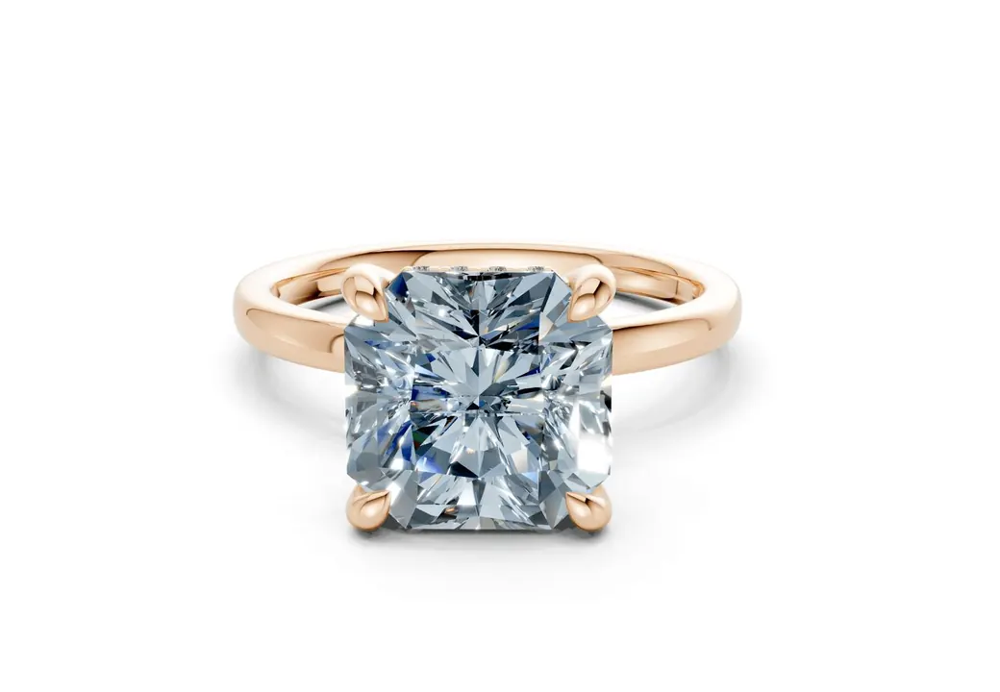
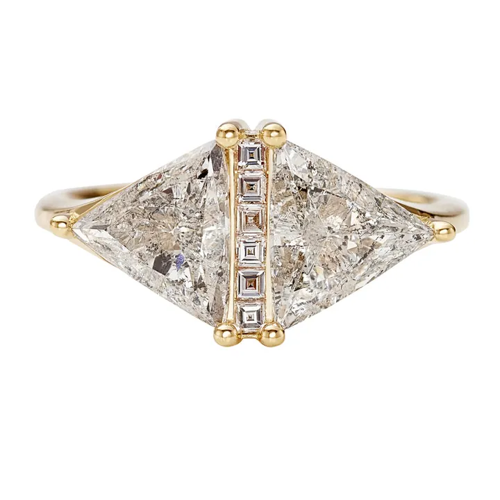

鑽石鑑定證書解讀：GIA 報告每一格的含義
一張 GIA 證書像鑽石的「身分證+履歷」，但每一格暗藏玄機——讀懂它，才不會被證書綁架。


核心定義
鑽石鑑定證書（grading report）是獨立實驗室對一顆裸鑽的客觀描述，不是「保固書」，也不是「估價單」。全球最有公信力的機構包括 GIA（美國寶石學院）、IGI（國際寶石學院）、AGS（美國寶石學會）等；對珠寶而言，GIA 報告是市場流通性最高的「護照」。
一張 GIA 報告包含五大區塊：基本資料（證書號、日期、形狀、尺寸）、4C 分級（Carat、Color、Clarity、Cut）、比例與細節（Measurements、Table、Crown/Pavilion、Polish、Symmetry、Fluorescence）、淨度圖（Plot）、以及註記（Comments）。每一格都有意義。
特徵與分類
| 欄位 | 讀法 | 常見陷阱 |
|---|---|---|
| Carat Weight | 精確克拉數 | 與標示不符要警覺 |
| Color / Clarity | 色階 / 淨度 | 不看整體會被誤導 |
| Cut（圓形） | 切工五級 | 花式切割無此欄 |
| Measurements | 長×寬×高 mm | 推算是否「顯大」 |
| Table / Depth % | 檯面與深度比 | 偏離理想區間＝光學打折 |
| Polish / Symmetry | 拋光 / 對稱 | Good 以下要留意 |
| Fluorescence | 螢光強度 | 與油霧風險相關 |
| Plot | 內含物位置圖 | 核對實物位置 |
| Comments | 備註（含雷射編號） | 雷射編號需與腰圍一致 |
GIA 也開始在報告上標示培育鑽石（Laboratory-Grown）、以及部分的處理揭露。證書右上角會寫明「Report Type」與「Report Date」，留意日期與鑽石「歲數」是否合理。
科學原理
證書的科學基礎是標準化量測：GIA 用受訓鑑定師在標準光源、標準環境下比色、比淨度，用比例儀量測切工參數，並以十倍放大觀察內含物後繪製淨度圖。誤差控制嚴謹，但不同實驗室、不同報告之間仍可能有一級差異。
「型態報告」與「分級報告」不同：GIA 的分級報告（Diamond Grading Report）針對 0.15 克拉以上裸鑽；更小的鑽石或已鑲嵌鑽石有時只能出「鑑定報告」（Identification Report）——兩者含金量不同。
鑑定與鑑別方法
- 核對證書號：GIA 證書右上角編號應與腰圍雷射標記一致
- 檢查紙本防偽：GIA 證書有浮水印、微縮印刷與全息防偽
- 上 GIA Report Check 官網輸入編號核驗真偽
- 比對 Measurements 與實物：不符即警覺
- 注意「複印證書」：只看影本無法確認真偽
- 已鑲嵌鑽石要求「雙證」：裸石證＋成品描述
市場行情與保養建議
市場上，GIA 證書是流通性的重要加成——同品質裸鑽，有 GIA 證書的轉手與貸款彈性都更好。但「有證書」不等於「高品質」：證書描述品質，市場定價看整體供需。
買證書鑽石的四個核對步驟：驗證書真偽、對雷射編號、比尺寸、看 Comments 有沒有「處理」字樣。四步走完，才算真正「看懂證書」。
常見誤區
GIA 報告不估價——它是描述，不是定價。一顆鑽石的市場價由供需、切工表現與賣家決定。拿「證書沒寫價格」說不值，是常見的誤導。
GIA 描述的是送驗的「那顆裸石」。若證書被調包、或鑽石已鑲嵌更換，證書就失效。證書的真偽與「證書對應的實物」都要驗證。
冷知識
美國寶石學院最初是珠寶商的教學機構，後來發展成全球最權威的寶石鑑定與研究單位。今日 GIA 的 4C 標準，已成為全球鑽石交易的通用語言。
鑑定師在十倍放大下，把內含物位置以標準符號繪製成圖——所以每一張 Plot 都是客製化的「鑽石地圖」。
反直覺觀點
證書保證的是「分級正確」，不是「你看起來最喜歡」。一顆 3EX 但火彩偏冷的鑽石，可能不如一顆切工 Very Good 但比例更合你眼緣的鑽石。證書是地圖，不是目的地。
部分賣家愛用「多份證書」營造專業感。但市場認可度最高的是 GIA 這類權威機構的單一證書；一堆小機構證書反而可能是混淆視聽。